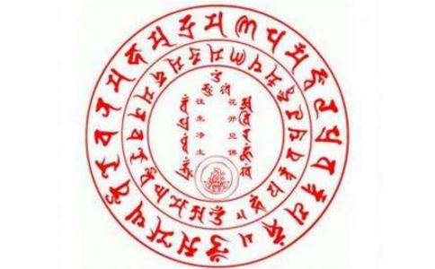

慈师：这是广传的咒子，大家都可以念的，这是普传的，我们汉传
拔一切业障根本得生
拔一切业障根本得生净土陀罗尼。
拔一切业障根本得生净土陀罗尼。
拔一切业障根本得生净土陀罗尼。
拔一切业障根本得生净土陀罗尼。
拔一切业障根本得生净土陀罗尼。
拔一切业障根本得生净土陀罗尼。
南无阿弥多婆夜。哆他伽多夜。哆地夜他。阿弥利都婆毗。阿弥利哆。悉耽婆毗。阿弥唎哆。毗迦兰帝。阿弥唎哆。毗迦兰多。伽弥腻。伽伽那。枳多迦利。娑婆诃。
南无阿弥多婆夜。哆他伽多夜。哆地夜他。阿弥利都婆毗。阿弥利哆。悉耽婆毗。阿弥唎哆。毗迦兰帝。阿弥唎哆。毗迦兰多。伽弥腻。伽伽那。枳多迦利。娑婆诃。
南无阿弥多婆夜。哆他伽多夜。哆地夜他。阿弥利都婆毗。阿弥利哆。悉耽婆毗。阿弥唎哆。毗迦兰帝。阿弥唎哆。毗迦兰多。伽弥腻。伽伽那。枳多迦利。娑婆诃……
居士：我代表以后所有听到这个录音的人谢谢师父。
慈师：这是普传的
娑婆诃！就是说：我应如是安住啊，
也可以这么说：慑伏一切烦恼的无量光无量寿啊，令众生信顺！说出心智的喜悦！喜悦的光明啊，照耀着世间，养育着法界！咸得成就阿耨多罗三藐三菩提！
也可以这么说：三身具备的无量寿无量光啊，是我的本体！一切众生亦复如是！心智的光明，启迪着众生的执着！众生的执着，实在是光明的本体！若有了知，就会成就！
或者可以这么说……呵呵（居士亦笑）。
拔一切业障根本得生净土陀罗尼。
一般真言不翻译。因为它从五种意中可以讲南无。实际五种意中，每一种意中都可以含无量义。南无，南无者，就是我们生命的本源！南无者，是生命的主动！南无者，是生命的再现！南无者，是生命的真实！南无者，是生命的所依！南无者，是生命的趣入！阿弥陀佛，是本质！阿弥陀佛，是威德！阿弥陀佛，是庄严！若认得许，就会说出赞美的词。
怛侄他（dang zhi tuo）就是赞美的词，就是赞美的偈颂，或者说是赞美的真心、真诚。怛侄他（dang zhi tuo）！ “南无阿弥多婆夜。哆他伽多夜。”“哆他伽多夜”就是“怛侄他（dang zhi tuo）”，后面都是赞美的词，说：啊！无量光啊无量寿！你是众生所依祜者！你成就一切众生的大威德善巧的本质！你照亮了我们！我们应该依从，应该信顺！实际我们本来也是这样！就是这样说的话，实际真是这样说的，只是说在这个陀罗尼中我们没有深入，所以没有生出陀罗尼善巧归命。
一卷《
居士：它跟
慈师：一样的，它从五门修法中都具，就是净土五种修法中都具，
刚才我说你（指一居士诵往生咒）供养大众，就是回向门，把阿弥陀佛的真实功德回向一切众生，令一切众生印契本源心智，一时得以安住，就是一种回向心所持诵。
那么观察心，就在念“南无阿弥陀佛”这种无碍光明、清净光明、念一切众生本具光明的
那么依奢摩他，就是依止门来修持，一切众生本来往生，法性贴切。往生的决定就是说依佛愿照十方国无所障碍，摄化众生同归无尽光佛刹，无尽光佛刹就是在我们观察的刹那，就在以佛愿力观察的刹那，一切众生一时成就阿耨多罗三藐三菩提，在纯净光明中各放光明，如本尊弥陀，各个无别。以此因缘就是心智的守护，横观竖观，男女老少、若凡若圣、若智者愚者、善者恶者，咸于弥陀净光明中，得见本心，就是说一切众生咸能往生，一切差别，一时融入同一光明藏，心智得以安定，这是止的修持，那就是所谓的作愿修持，在此处。
再一个就是以所谓的赞叹，说：阿弥陀佛啊，你那无尽的光明，在十劫以来，利益着无尽的众生！已成就了无尽的众生！于无上菩提得不退转！阿弥陀佛啊，你如此尊贵的善巧，是我生命的依止，也是一切众生的必归！就是赞美的词，所谓成就的赞美。
如果以礼敬地持诵，就是说：世尊啊——南无就是世尊，南无就是我礼敬——我礼敬无量寿无量光，不仅是我礼敬，是一切众生礼敬无量光无量寿，我们都应该礼敬，何以故呢？说出这样礼敬的偈赞，因为它是一切众生的本源，是法界的本源，是一切庄严相的源头，我们应该赞美它，礼敬它。娑婆诃就是成就赞美。
居士：这真言含量太大……！
慈师：善哉！
居士：它包括好多法门……
慈师：不是包括好多法门，是包括一切法门，称为总持法门，陀罗尼是总持法门。此法含尽一切法，无有疏漏，是为陀罗尼教言。
居士：应该讲一讲。
慈师（笑）：我以前在佛
{居士：我看书上说这个真言的来历是
慈师：对。
拔一切业障根本得生净土陀罗尼。
拔一切业障根本得生净土陀罗尼。
“ 拔一切业障根本得生净土陀罗尼。
过去人闻经题就得到
佛说每一言辞都有无尽意，有无量的含义、无穷的含义、不可说的含义。
居士：我以前念“拔一切业障根本得生净土陀罗尼”，理解就是一切众生得生净土……
慈师：我感觉到这个真言，象翻译、
宝箧
这个言辞是
也可以这么说：慑伏一切烦恼的无量光无量寿啊！令众生信顺！说出心智的喜悦！喜悦的光明啊，照着世间，养育着法界！咸得成就阿若多罗三藐三菩提！
也可以这么说：三身具备的无量寿无量光啊，是我的本体！一切众生亦复如是！心智的光明，启迪着众生的执着！众生的执着，实在是光明本体！若有了知，就会成就！
或者可以这么说……呵呵（居士亦笑）。
“拔一切业障根本得生净土陀罗尼”，一般真言不翻译。因为它从五种义中可以讲南无。实际五种义中，每一种义中都可以含无量义。南无，南无者，就是我们生命的本源！南无者，是生命的主动！南无者，是生命的再现！南无者，是生命的真实！南无者，是生命的所依！南无者，是生命的趣入！阿弥陀佛，是本质！阿弥陀佛，是威德！阿弥陀佛，是庄严！所以若认得许，就会说出赞美的词。怛侄他（dang zhi tuo）就是赞美的词，就是赞美的偈颂，或者说是赞美的真心、真诚，怛侄他（dang zhi tuo）！
“南无阿弥多婆夜。哆他伽多夜。”“哆他伽多夜”就是“怛侄他（dang zhi tuo）”，后面都是赞美的词，说无量光啊无量寿！你是众生所依祜者！你成就一切众生的大威德善巧的本质！你照亮了我们！我们应该依从，应该信顺！实际我们本来就是这样！就是这样说的话，实际真是这样说的，只是说在这个陀罗尼中我们没有深入，所以没有圣义陀罗尼善巧归命。
一卷《无量寿经》也就是讲的《往生咒》，“拔一切业障根本得生净土陀罗尼”，三藏十二部也是讲的这。你要是把它展现开来，就是说，不管从供养义、礼敬义、归命义、守护义、慑服义、成就义，或者说具足义来说，都可以繁衍无量义，所以这个真言没法说，翻译不了，怎么翻译都是无穷义，所以我们干脆不翻译了，“南无阿弥多婆夜……”就这样念下去，主要是没法翻译，你翻译没有用，所以称为“陀罗尼”。没法翻译，越翻译越多，无量无边的，繁衍出无尽的光明刹土。
居士：它跟念佛有什么差异？
慈师：一样的，它从赞叹门，从五门修法中都具，就是净土五种修法中都具，礼拜、赞叹、作愿、观察、回向，都是具足的。
刚才我说你供养大众，就是回向门，把阿弥陀佛的真实功德回向一切众生，令一切众生印契本源心智，一时得以安住，就是一种回向心所持诵。
那么观察心，就在念“南无阿弥陀佛”这种无碍光明、清净光明、念一切众生本具光明的刹那，照见这个法界，就是如实地以智慧观察、智慧的回施、智慧的普照、智慧的受用、智慧的确立。那么依奢摩他，就是以止门来修持，一切众生本来往生，方便贴切。往生的决定就是说依佛愿照十方国无所障碍，摄化众生同归无尽光佛刹，无尽光佛刹就是在我们观察的刹那，就在以佛愿力观察的刹那，一切众生一时成就阿耨多罗三藐三菩提，在纯净光明中各放光明，如本尊弥陀，各个无别，以此因缘就是心智的守护，横观竖观，男女老少、若凡若圣、若智者愚者、善者恶者，咸于弥陀净光明中，得见本心，就是说一切众生咸能往生，一切差别，一时融入同一光明藏，心智得以安定，这是止的修持，那就是所谓的作愿修持，在此处。
再一个就是以所谓的赞叹，说阿弥陀佛啊，你那无尽的光明，在十劫以来，利益着无尽的众生，已成就了无尽的众生，于无上菩提得不退转！阿弥陀佛啊，你如此尊贵的善巧，是我的顶戴，是我的生命的依止，也是一切众生的必归！就是赞美的词！所谓成就的赞美。
念诵千万遍往生咒（慈法法师讲记摘录） 不知道我们在座的诸位善知识有没有善知识实践过这个五停心这个修持，若是有这个修持现前烦恼即能伏住。就是任何的贪、嗔、痴、慢、疑的现前烦恼自然就是能够伏得住的，得小解脱。这解脱一样能使自己周边有情能得到清凉、安乐的，我们看看自己的
但也有念佛人、持咒人呀，今天我接到一个居士给我发来的一个短信，他是这样说的，他大概是念了一千多万这个真言，就是我们汉地的这个《拨一切业障根本得生净土陀罗尼》。他念得像境界就是很善巧的了，现在念到个什么念也是这样的心智，不念也是这样的心智。
这个心智就是一如的状态，若念是什么样的感受，谈事情、感知事情这样子，不念也是这样子，他说这个事情该怎么说呢？实际上这是一种念真言的一种五停心的状态，也可以得到这种所谓的一如心智，所以很多
善导大师在世的时候，诵一百万遍《阿弥陀经》、五十万遍《阿弥陀经》的人太多了，整个身心都融在这里面了，他就没有其他因缘。
就这九十六句偈，我们走动的时候，我是没有啥观，也没有啥功夫，但是从南到北，我这一下走遍了，从西双版纳一直到蒙古，基本上走到头了，就是这九十六句偈子真是，没有观也感觉观了，真是，说实话，这个文字也有影响，我们心里越干净、越虔诚，可以直接给你带来一个不可思议，你不相信，没事你就念，闭着眼睛就念，它也给你一个真正增上的因缘，象过去很多人念念真言，念着念着就归
最早《往生论》我看的时候，我给你说啥味道啊，以前早就看过了，净土三经大家
象很多人念三十万遍往生咒以后，因缘都会有个大的转折，为什么呢，你在供养嘛，对不对，若
及口称三昧者，我们念南无阿弥陀佛行持真言，不能轻易地说话，说什么这个事实都会现前，因为口业可以成就。象我们凡夫欲成就世俗法，念一百万遍真言，一般可以成就一个所求的因缘；念一千万遍，可以成就出离世间的
时间：大约2004年
地点：辽宁海城保安寺